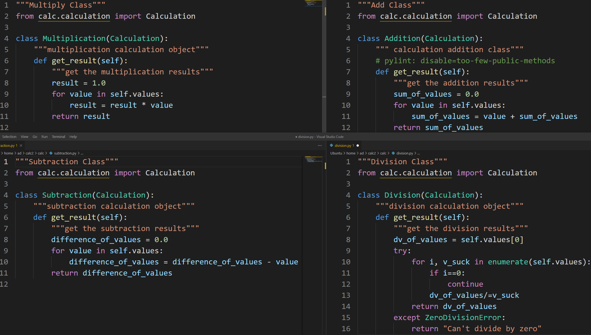

Seperation of Concerns
Home
Pylint
Testing
OOP
Seperation
(current)

Multiplication, Addition, Subtraction, and Division Scripts
Seperation of Concerns
Seperation of Concerns is the idea of avoiding combining different concerns or pieces of code
When code is seperated, there is a less probability of breaking unmodified code
Another way of thinking about this, is that all of the functions are simple, one-liners
This techinique makes it easier to maintain and add features
In the calculation program, you can see that the four types of operations are located in different python scripts
Even the base calculation, the abstract class, is seperated
Calculator is the API for calculation, every function dealing with the
history
array is located there
There is no duplicated code, meaning there are no repeating loops
W3C
©2021 Copyright
Authors:
Jay Patel